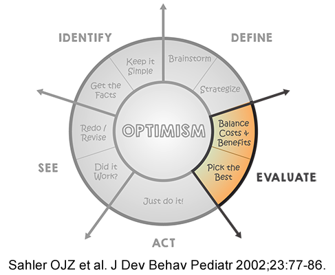

Module: Coping and body image/appearance
Vanessa L. Malcarne, PhD, Professor, Department of Psychology, San Diego State University, San Diego, CA with input from Mary Alore, MBA
1. Identify the problem
Don’t think of scleroderma as the thing you are coping with. That’s overwhelming. Instead, think of what the specific challenges associated with scleroderma are, and try to cope with those. These challenges could be:
- medical issues
- emotional issues
- family issues
Be very specific when identifying problems.
So, rather than identifying the problems in general, such as
I need to find better ways to cope with my scleroderma,
be very specific, such as,
- I need to find a better way to manage the pain I feel during the day.
- I need to get better sleep.
- My spouse doesn’t seem to understand what I’m going through. I need to improve this situation.
Once you define the problem more specifically, it seems more manageable. It will also more clearly point you toward coping strategies that will help.
2. Define your options
Most of us do the same things, habitually, over and over again. For example, some people always try to solve problems, and other people always try to avoid problems. Although it might feel comfortable to always do things the same way, it’s not helpful to take the same approach all the time.
After you’ve identified the problem you need to cope with, brainstorm solutions:
- Make a list of all the ways you could try to cope with this. Make the list as long as you can. Don’t stop at 2 or 3 alternatives. Try for at least a dozen. Research shows that people who think of lots of alternate ways to cope are better at eventually solving their problems.
- We usually skip this brainstorming step. We tend to just do what we always do and what we are comfortable with. We act in a predicable manner. Brainstorming helps us think differently about problems and helps us discover new ways to cope. Don’t skip this important step.
- When you are brainstorming, write down everything that comes to mind. Don’t think, “But that won’t work.” You will get to evaluate strategies in the next step. During the brainstorming step, list everything you can think of.
- Don’t think that you have to come up with all the solutions yourself. Ask other people (spouse, kids, healthcare providers) what approaches they would use to try to solve the problem you’ve identified. You’ll be surprised at all of the things you never even considered!
3. Evaluate your options
Now look at each coping strategy you’ve written down. Try to carefully evaluate the pros and cons of each one. Avoid making quick decisions about strategies. Don’t automatically think, “That won’t work” or “I don’t want to do that” if you don’t have a good reason.
Often, we reject coping strategies simply because we’re unfamiliar with them or we’re not sure we can do them. For example, imagine that the problem was that you felt you didn’t know much about scleroderma and wanted to learn more. One possible way to address this would be to look on the Internet. Excellent information on scleroderma can be obtained from various websites, including the Scleroderma Foundation, the Scleroderma Research Foundation, NIAMS (the National Institute of Arthritis and Musculoskeletal and Skin Diseases), the National Institutes of Health, WebMD, the Arthritis Foundation and so on. However, if you are unfamiliar with using computers and the Internet or don’t have a computer at home, you might quickly dismiss this approach, thinking, “I can’t do that!” But if you considered it a bit more carefully, you would realize that this might work for you after all. Most public libraries have free computer access to the Internet and also have staff to help you find the information you want. There might be relatives, friends, or neighbors who would let you use their computers to access the Internet and help you with your information search.
After you have carefully considered all of the pros and cons of each approach, choose the approach that you think has the best chance of success, with the fewest negative costs.
4. Act on your plan!
Here you have to put your coping approach into action.
This may mean getting some instruction, getting some equipment, or learning and practicing new skills. For example, imagine that you decide that you are worrying too much about your disease and want to relax more. After considering a number of possible strategies for coping with your anxiety, you choose to learn to meditate. You may need to get instruction on how to meditate if you’ve never done it before. You may also need to set up a place to meditate and to practice your meditation skills.
Similarly, let’s say the problem is loss of joint flexibility, and you decide to do regular stretching exercises. You may need to learn which exercises will be most helpful to you. You may need professional advice or assistance. You may need to find a place to exercise. You may even need some aids, such as exercise balls or clothing. For more help, you could ask your healthcare provider for a referral to an occupational therapist or a physical therapist, or both.
You often need help from other people to begin using your coping strategy. This is where a good support system can really come in handy.
Assemble a support system
A support system should have several parts, and should address your physical, emotional, and informational needs and concerns:
Family
This is where most people turn for support, and it’s your most important source of help. But it’s important to remember that your family won’t automatically know how to help you with your disease. Just as you are learning how to manage the challenges associated with scleroderma, they will be learning, too. There are many sources of information for families of people with chronic illnesses. These sources include health professionals, support groups, books, and the Internet. Encourage your family members to get the assistance and information they need so they can help you in an effective way without becoming overwhelmed themselves. A good family therapist with experience working with families dealing with chronic illness can be incredibly helpful if your family is becoming overwhelmed.
Friends
Friends will often offer to help, but in many cases, they have no idea what to do to be helpful to you. They may even feel as if they are bothering you when they ask. Don’t expect your friends to read your mind. If you need to be driven to a doctor’s appointment next week, ask. If it would really help you if your neighbor could pick up some groceries for you next time he or she is at the store, ask. If you need help lifting something, ask.
And don’t forget that friends can be a wonderful resource for addressing emotional needs. If you just want to spend some time having fun and focusing on something other than scleroderma, call a friend and meet for lunch, go to a movie, take a drive, or sit outside on the patio and catch up. It will make you feel better and make your friend feel better, too. It’s frustrating for friends when they want to help but don’t know how.
Work/school
In addition to good-hearted people at work or school whom you may count among your friends, there are often co-workers, supervisors, teachers, and human resources personnel who can help you with the specific challenges presented by your scleroderma. Share with work associates the specific issues you are managing, and enlist their support in solving those in the workplace so you can continue to be effective at your job.
The human resources department can be a fantastic source of professional assistance for making modifications to the workplace and/or your schedule and responsibilities. It can also help connect you with resources to address issues of physical and mental health, insurance, and finances. If you are a student, don’t hesitate to speak with your teachers or professors about your scleroderma. They can work with you to modify your schedule, get you assistance with learning materials and classroom accommodations, and so on.
Sometimes, people don’t want to tell persons of authority (e.g. bosses, professors) about their scleroderma, thinking that it may be used against them in some way. This is definitely a possibility, and everyone has heard stories of insensitive supervisors. You need to carefully evaluate the person and situation to be sure you are not putting yourself at professional risk. However, remember that if you don’t tell them what you are coping with and don’t enlist their support, they will not be able to help you. You can also mention that for the most part, you do not want or need to be treated differently from others and that you can handle your health problems.
One person with scleroderma says, “I make it a point to tell my superiors and co-workers that when I cross my arms, it is not ‘body language’ which would indicate I am being closed and not open to suggestions or the conversation. I tell them I am trying to keep my hands warm, to combat the poor circulation in my hands because of the scleroderma. I think this has helped me in conversations and meetings. And they say they appreciate knowing this.”
There are federal and state laws (such as the Americans with Disabilities Act) that protect people with illness from discrimination in the workplace and in education. These laws can protect you in difficult situations. Human resources and student services personnel at colleges and universities can be excellent advocates for employees who find themselves experiencing discrimination due to their illness.
Also see the module on Self-Advocacy.
Community
Community is defined in different ways for everyone. It may be the people in your neighborhood, the people in your town, members of an organization in which you are active, or other professionals in your field. These days, it can even be an electronic community of people who have never actually met but communicate via email and the Internet. Many of us are members of many, sometimes overlapping, communities. Think about each community of which you are a member and decide how your participation in that community can help you manage your scleroderma. Many people find their spiritual/religious community to be of help.
A special community that you might want to add, if you aren’t already a member, is a scleroderma or chronic illness support group. Although some people shy away from support groups, primarily due to discomfort with sharing personal information, studies have shown that support groups are helpful to people in many ways. If you don’t feel comfortable going in person or there is no support group near you, consider online support groups.
Listen to Chanel’s testimonial
Healthcare professionals
When you have scleroderma, healthcare professionals should occupy a very special position in your social support network. Yet many people barely know the doctors, nurses, and other professionals who treat them, and may feel uncomfortable talking with them or contacting them with questions or concerns.
In many clinics and hospital divisions there are people assigned to serve as patient advocates, or whose specific skills are communicating with patients and making sure that their needs are being met. Try to identify who these people are in your healthcare system and express your specific needs to them. It’s often not realistic to expect busy healthcare professionals (such as your rheumatologist) to respond quickly and completely to all of your needs, even for information. They often simply don’t have time. Try to get support and information from other sources, and save your requests and questions for healthcare professionals who are specially suited to address them. For example, you don’t need to call your rheumatologist to find out whether there is a support group in the area. There are other ways to find out. However, it is essential that questions about your specific medical condition and its management be discussed thoroughly with your healthcare team, to your satisfaction and understanding. You should be an active member of your healthcare team!
5. Evaluate your plan

It’s really important to always learn from what you do. After you’ve tried to implement your coping strategy, evaluate it.
Ask yourself, did my plan work the way I hoped?
If YES . . .
Great! It’s time to reward yourself. Congratulate yourself for doing a good job, solving an important problem, and making your life better. You might also want to plan for a specific reward that you will get after implementing a new coping strategy or solving a problem. For example, people who are trying to lose weight often reward themselves for increments of weight loss by buying a new outfit.
If NO . . .
If no, consider: Was it because the coping strategy itself didn’t work, or was it just too hard for you to implement it? Ask yourself:
- Did I stick to my plan? If not, what did I end up doing instead?
- Did anything limit my ability to implement my plan?
- Should I revise my plan?
For example, you may have decided that the problem of decreasing flexibility would best be solved by doing flexibility training, so you enrolled in a Pilates class. However, once you got in the class, you found it overwhelming and too difficult, and you stopped going. This doesn’t mean that the strategy of engaging in flexibility training didn’t work. Perhaps Pilates was not the best choice. Perhaps something more low-impact would have worked better – simple stretching or yoga. Or perhaps you need individual instruction from a personal trainer or rehabilitation specialist. Before abandoning a particular coping approach, evaluate whether the problem was with the coping strategy or with your implementation of it. If it was the coping strategy, choose something else. Go back to your long list of alternatives and choose again. If it was the implementation, adjust your implementation or get whatever additional help you need to make the implementation more effective and successful. In other words, revise and do it again.
These general steps will help you cope with most problems presented by scleroderma.